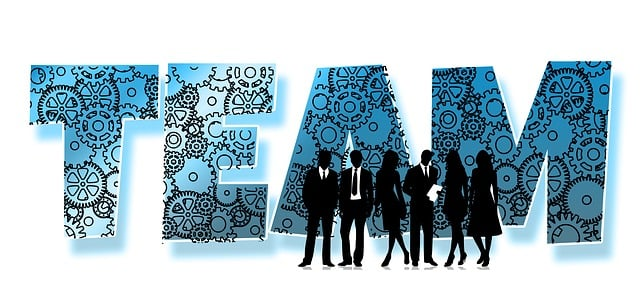

A Era Digital
A Era Digital mudou bastante a forma como as pessoas vivem, se comunicam e fazem as tarefas cotidianas. As empresas não ficam de fora desse processo e também precisam se adaptar para usufruir dos benefícios da transformação digital. Os ajustes são necessários para ganharem vantagem competitiva e ficarem mais próximas dos clientes.
A seguir, explicaremos o que é a Era Digital e como ocorreu o processo de transformação da era analógica até chegarmos ao período atual. Também detalharemos os ganhos que as empresas adquirem com a transformação digital, além dos desafios que podem ser encontrados neste caminho. Ainda descreveremos como obter melhores resultados com a Era Digital. Boa leitura!
O que é a Era Digital
A Era Digital é também conhecida como Era da Informação ou Era Tecnológica e sucede o desenvolvimento tecnológico da Terceira Revolução Industrial. Neste período, são apresentadas inovações que alteram as formas de trabalho, de comunicação e de pensamento.
A Era Tecnológica acompanha você por todos os canais de comunicação que utiliza no dia a dia, como smartphone e notebook. Também está em meio às diversas soluções tecnológicas que otimizam o fluxo de trabalho na sua empresa e permite interações em rede.
Grandes desafios da era digital

O primeiro grande desafio de uma empresa é estar presente nas plataformas digitais, para criar um relacionamento com parceiros e clientes, além de organizar o seu ecossistema. Isso vai muito além das redes sociais: estar presente em toda a internet, dentro do que faz sentido para o negócio, é importante para criar uma autoridade online, se destacando no google, por exemplo.
Tornar os processos mais ágeis com a ajuda dos meios digitais também é uma necessidade atual do mercado. Produção, processamento de dados, atendimento ao cliente, tudo isso pode ser otimizado com a ajuda das novas tecnologias e os negócios que não se adaptam a essa realidade, se tornam rapidamente defasados.
As relações de trabalho também sofreram enormes transformações com essa nova era, exigindo uma maior flexibilidade. Já é uma realidade os serviços prestados de forma freelancer, sem horário fixo, através de home office (trabalho feito de casa) ou de Coworkings (ambientes de trabalho compartilhado). Economiza-se tempo e dinheiro, que podem ser utilizados para trazer ainda mais inovação ao negócio.
A própria cultura da empresa é um desafio para a era digital. As lideranças têm o papel de implementar as transformações digitais nas organizações e promover a adesão de todos os colaboradores.
Toda essa mudança no mercado se deu por conta do consumidor que se transformou. Mais informados, os clientes se tornam cada vez mais exigentes e procuram uma experiência cada vez melhor com a marca, sendo menos fiéis. Atualmente, até mesmo os direitos do Código de Defesa do Consumidor estão adaptados à realidade digital.
Fazendo o negócio sobreviver
Diante de tantas novidades e desafio que a era digital apresenta aos negócios, existem algumas dicas que devem ser seguidas para garantir a sobrevivência do empreendimento.
Cultura da empresa
Ninguém faz nada sozinho, por isso, não adianta o gestor estar disposto a implementar um modelo digital nos negócios se os colaboradores não estiverem na mesma sintonia. A cultura da empresa deve ser adaptada para a nova realidade, com o objetivo de tornar os colaboradores dispostos e motivados.
